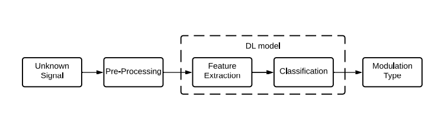

Automatic modulation classification (AMC) in the adaptive modulation system serves
the purpose of identifying the modulation scheme mostly according to the channel condition
and the other parameters in the channel for the efficient transmission of the signal.
Deep learning techniques, which can automatically extract features, have been looked
at as probable approaches in the view of these considerations. AMC has been using these
2
techniques to automatically select the modulation classification and also to extract the features
for further processing for demodulation. To be more specific, Deep neural networks
(DNN) like Convolutional Neural Network (CNN) and Recurrent Neural Network (RNN),
having multiple layers proved to be efficient in feature extraction. This improvement in performance
with DNN, techniques and the growing requirement of robust and highly efficient
communication systems is making a high demand in research of AMC.

Many different approaches
for AMC have been proposed which are categorized as ’Decision Theoretic Approach’, ’Feature Based
Approach’ and ’Deep Learning Based Approach’. For our project, we have implemented
various types of classifiers for AMC which include likelihood based approach, deep learning
based approaches (LSTM and BiLSTM networks) and also using a Quantum Neural Network
(QNN). The likelihood based classifier and the QNN are restricted to classify only two types
of modulations, namely BPSK and QPSK due to various limitation of those approaches.
The deep learning based classifiers can classify 11 different modualtion types from their IQ
samples in RadioML2016.10A dataset.

{kind=link}
{kind=link}
{kind=link}